19 Capacitance
Capacitors, stored energy and exponential discharge
Learning objectives
By the end of this chapter, you should be able to:
- define capacitance for an isolated spherical conductor and a parallel-plate capacitor;
- use \(C=Q/V\) and interpret a charge-potential difference graph;
- derive and use the rules for capacitors in series and parallel;
- determine stored energy from the area under a potential-charge graph;
- use \(W=\tfrac12QV=\tfrac12CV^2=Q^2/(2C)\);
- interpret current-time, charge-time and potential difference-time discharge graphs;
- use the time constant \(\tau=RC\);
- use exponential discharge equations for \(I\), \(Q\) and \(V\).
19.1 Capacitors and capacitance
What a capacitor does
A capacitor consists of two conductors separated by an insulator or dielectric. Connecting it to a source transfers electrons from one conductor to the other, producing charges \(+Q\) and \(-Q\) and a potential difference \(V\).
The capacitor as a whole has zero net charge because its plates carry equal and opposite charges. The phrase charge stored means the magnitude \(Q\) on either plate. Energy is stored in the electric field between the conductors.
Definition of capacitance
Capacitance is the charge stored per unit potential difference:
\[C=\frac{Q}{V}, \qquad Q=CV.\]
The farad is defined by
\[1\ \mathrm{F}=1\ \mathrm{C\ V^{-1}}.\]
Common submultiples are \(\mathrm{\mu F}\), \(\mathrm{nF}\) and \(\mathrm{pF}\). For a linear capacitor, \(Q\propto V\) and the gradient of a graph of \(Q\) against \(V\) is \(C\).
Isolated spherical conductor and parallel plates
For an isolated spherical conductor, \(Q\) is the charge on the conductor and \(V\) is its potential relative to infinity. For a parallel-plate capacitor, \(Q\) is the magnitude of charge on either plate and \(V\) is the potential difference between the plates.
Capacitance depends on geometry and the dielectric. For parallel plates, greater plate area and a higher-permittivity dielectric increase capacitance, while greater plate separation decreases it.
Capacitors in parallel
Capacitors connected in parallel have the same potential difference:
\[V_1=V_2=\cdots=V.\]
The total charge supplied is
\[Q=Q_1+Q_2+\cdots.\]
Using \(Q=CV\) gives
\[C_{\mathrm{total}}=C_1+C_2+\cdots.\]
Parallel connection increases the effective conducting area, so combined capacitance is greater than any individual capacitance.
Capacitors in series
Capacitors in series acquire equal charge magnitudes:
\[Q_1=Q_2=\cdots=Q.\]
Potential differences add:
\[V=V_1+V_2+\cdots.\]
Using \(V=Q/C\) gives
\[\frac{1}{C_{\mathrm{total}}}=\frac{1}{C_1}+\frac{1}{C_2}+\cdots.\]
The combined capacitance is smaller than the smallest individual capacitance. In series, voltage divides inversely with capacitance: the smaller capacitor has the larger potential difference.
Network strategy and voltage ratings
Reduce a mixed network one stage at a time. Mark groups that are definitely in parallel or series before calculating.
For capacitors in series, the same \(Q\) appears on every capacitor and \(V_i=Q/C_i\). To check a maximum safe supply voltage, calculate the voltage across each capacitor rather than assuming equal voltage unless the series capacitances are equal.
19.2 Energy stored in a capacitor
Work done during charging
As charge accumulates, the potential difference increases. Moving additional charge onto a plate therefore requires progressively more work. The small work done to transfer charge \(dQ\) at potential difference \(V\) is
\[dW=V\,dQ.\]
Total stored energy is the area under a graph of \(V\) against \(Q\):
\[W=\int_0^Q V\,dQ.\]
For a linear capacitor, \(V=Q/C\) and this area is a triangle.
Energy equations
The energy stored in a capacitor is
\[W=\frac12QV.\]
Using \(Q=CV\) gives two equivalent forms:
\[W=\frac12CV^2=\frac{Q^2}{2C}.\]
Choose the form that matches the known quantities. Energy is measured in joules.
Changes in stored energy
For a fixed capacitor, \(W\propto V^2\) and \(W\propto Q^2\). Halving \(V\) or \(Q\) reduces stored energy to one quarter.
The energy lost when potential changes from \(V_1\) to \(V_2\) is
\[\Delta W=\frac12C(V_1^2-V_2^2).\]
On a \(Q\)-\(V\) graph, the corresponding energy change is the area under the line between the two voltage values.
19.3 Discharging a capacitor
Exponential discharge
When a charged capacitor discharges through a resistor, charge flows from one plate to the other. As \(Q\) decreases, the capacitor voltage \(V=Q/C\) decreases, so the current \(I=V/R\) also decreases.
Therefore \(Q\), \(V\) and the magnitude of \(I\) all decay exponentially. Their graphs start at an initial value, have a steep negative gradient at first and approach zero asymptotically.
Time constant
The time constant of an RC discharge circuit is
\[\tau=RC.\]
After one time constant,
\[\frac{x}{x_0}=e^{-1}\approx0.37,\]
where \(x\) may be charge, potential difference or current magnitude. A larger resistance or capacitance produces a slower discharge.
Discharge equations
For a capacitor discharging through a resistor,
\[Q=Q_0e^{-t/(RC)},\]
\[V=V_0e^{-t/(RC)},\]
\[I=I_0e^{-t/(RC)}\]
for current magnitude. If current direction is defined relative to the charging direction, a minus sign may be required.
To solve for time,
\[t=-RC\ln\left(\frac{x}{x_0}\right).\]
Graph checks
- At \(t=0\), \(Q=Q_0\), \(V=V_0\) and \(|I|=I_0=V_0/R\).
- At \(t=RC\), each quantity is about \(0.37\) of its initial value.
- The tangent at \(t=0\) meets the time axis at approximately \(t=RC\).
- The initial gradients are steepest; the curves never cross the time axis in the ideal model.
- Since \(W=\tfrac12CV^2\), stored energy decays as \(W=W_0e^{-2t/(RC)}\).
Charging compared with discharging
During charging from a constant supply \(V_0\),
\[V_C=V_0\left(1-e^{-t/(RC)}\right),\]
while current decreases from \(V_0/R\) to zero. During discharge, both capacitor voltage and current magnitude decrease from their initial values to zero.
Smoothing circuits repeatedly charge a capacitor near peaks of a rectified input and discharge it through the load between peaks, reducing output ripple.
Structured Questions
19.1 Capacitors - Medium
Example 1 · Capacitor combinations and stored energy · 19.1 SQ Medium Q1
(a) Define the capacitance of a parallel plate capacitor. [2 marks]
(b) Two capacitors, of capacitances \(C_A\) and \(C_B\), are connected in parallel to a power supply of electromotive force (e.m.f.) \(E\), as shown in Fig. 1.1.
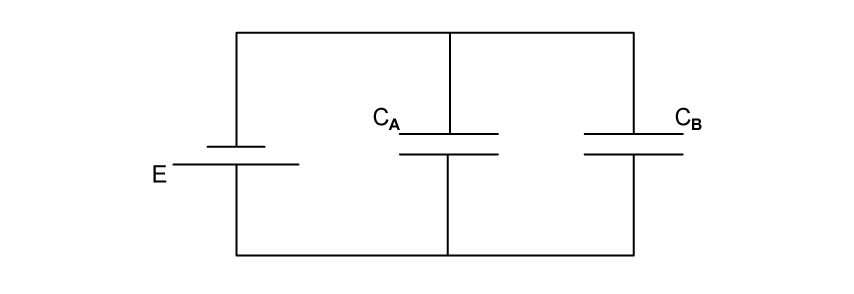
Determine an expression for the combined capacitance \(C_C\) of the two capacitors. [3 marks]
(c) Two capacitors of capacitances \(18\ \mathrm{\mu F}\) and \(51\ \mathrm{\mu F}\), and a resistor of resistance \(4.5\ \mathrm{k\Omega}\), are connected into the circuit of Fig. 1.2.
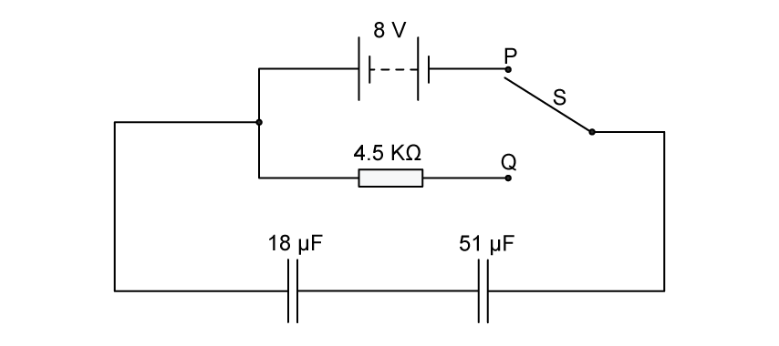
The battery has an e.m.f. of \(8\ \mathrm{V}\).
(i) Calculate the combined capacitance of the two capacitors. [1]
(ii) The two-way switch S is initially at position P, so that the capacitors are fully charged.
Use the information in (c)(i) to calculate the total energy stored in the two capacitors. [2]
[3 marks]
Show mark scheme / model answer
(a)
- Capacitance is charge divided by potential difference.
[1] - The charge is the magnitude on one plate and the potential difference is across the two plates.
[1]
(b)
- Both capacitors have p.d. \(E\).
[1] - Total charge is \(Q_C=Q_A+Q_B\).
[1] - Hence \(EC_C=EC_A+EC_B\), so \(C_C=C_A+C_B\).
[1]
(c)
(i) For the series capacitors,
\[\frac{1}{C}=\frac{1}{18}+\frac{1}{51},\]
giving \(C=13\ \mathrm{\mu F}\) to two significant figures.
[1](ii) \(W=\tfrac12CV^2\).
[1]\(W=\tfrac12(13\times10^{-6})(8^2)=4.16\times10^{-4}\ \mathrm{J}\).
[1]
Example 2 · Mixed capacitor network and Q-V graph · 19.1 SQ Medium Q2
(a) Three capacitors, each of capacitance \(27\ \mathrm{\mu F}\), are connected as shown in Fig. 1.1.
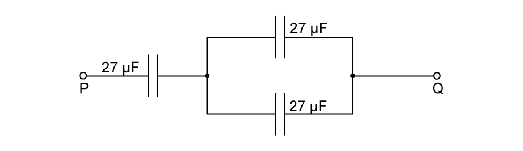
Calculate the total capacitance between points P and Q. [2 marks]
(b) The maximum safe potential difference that can be applied across any one capacitor is \(4\ \mathrm{V}\).
Determine the maximum safe potential difference that can be applied between points P and Q. [2 marks]
(c) A capacitor consists of an insulator separating two metal plates, as shown in Fig. 1.3.
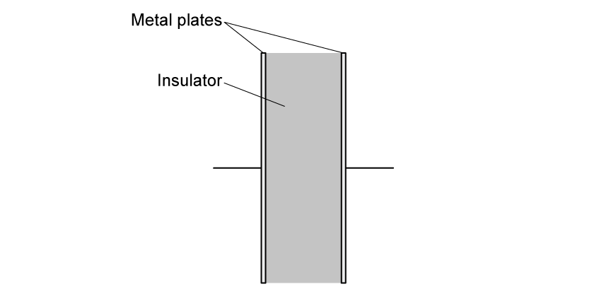
The potential difference between the plates is \(V\). The variation with \(V\) of the magnitude of the charge \(Q\) on one plate is shown in Fig. 1.4.
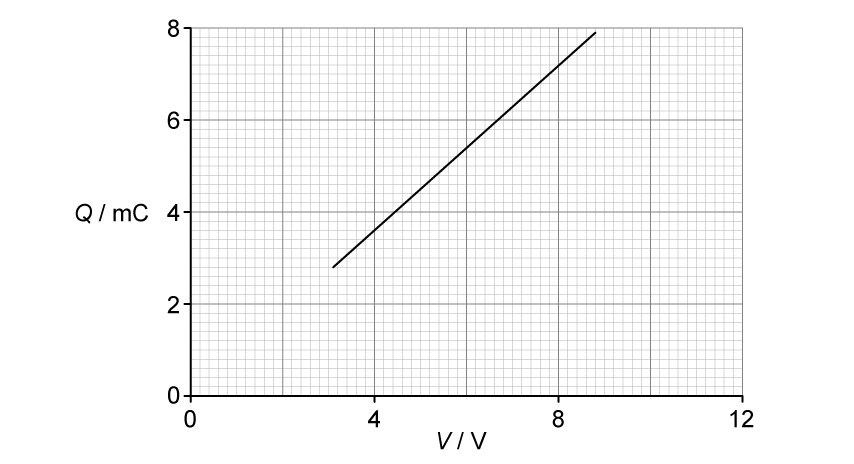
Explain why the capacitor stores energy but not charge. [3 marks]
(d) Use Fig. 1.4 to determine:
(i) the capacitance of the capacitor; [2]
(ii) the loss in energy stored in the capacitor when the potential difference \(V\) is reduced from \(8\ \mathrm{V}\) to \(6\ \mathrm{V}\). [2]
[4 marks]
Show mark scheme / model answer
(a)
- The two parallel capacitors give \(C_P=27+27=54\ \mathrm{\mu F}\).
[1] - The \(54\ \mathrm{\mu F}\) combination is in series with \(27\ \mathrm{\mu F}\), so \(1/C=1/54+1/27\) and \(C=18\ \mathrm{\mu F}\).
[1]
(b)
- At \(4\ \mathrm{V}\) across the single \(27\ \mathrm{\mu F}\) capacitor, \(Q=CV=1.08\times10^{-4}\ \mathrm{C}\). The same charge is on the series equivalent, so the p.d. across the \(54\ \mathrm{\mu F}\) parallel group is \(V=Q/C=2\ \mathrm{V}\).
[1] - Maximum p.d. from P to Q is \(4+2=6\ \mathrm{V}\).
[1]
(c)
- The charges on the two plates are equal and opposite.
[1] - The resultant charge on the complete capacitor is therefore zero.
[1] - Energy is stored because the charges are separated.
[1]
(d)
- (i) From the graph at \(V=8\ \mathrm{V}\), \(Q=7.2\ \mathrm{mC}\).
[1] - \(C=Q/V=(7.2\times10^{-3})/8=9.0\times10^{-4}\ \mathrm{F}=900\ \mathrm{\mu F}\).
[1] - (ii) The supplied PDF answer identifies \(Q_8=7.2\ \mathrm{mC}\) and \(Q_6=5.4\ \mathrm{mC}\), then gives the energy loss as \(38\ \mathrm{mJ}\).
[2]
Source-consistency warning: the area between \(6\ \mathrm{V}\) and \(8\ \mathrm{V}\) is a trapezium of width \(2\ \mathrm{V}\), so the graph and \(\Delta W=\tfrac12C(8^2-6^2)\) give \(12.6\ \mathrm{mJ}\), not \(38\ \mathrm{mJ}\). The PDF answer substitutes a width of \(6\ \mathrm{V}\) after stating \(2\ \mathrm{V}\).
Example 3 · Functions and arrangements of capacitors · 19.1 SQ Medium Q3
(a) State two functions of capacitors connected in electrical circuits. [2 marks]
(b) Three capacitors are connected in parallel to a power supply as shown in Fig. 1.1.
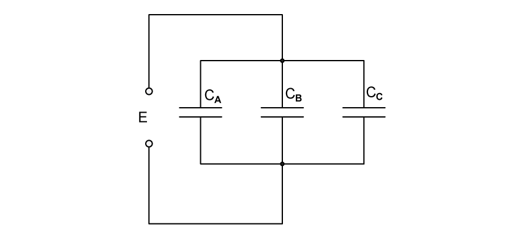
The capacitors have a capacitance \(C_A\), \(C_B\) and \(C_C\). The power supply provides a potential difference \(E\).
(i) Explain why the charge on the positive plate of each capacitor is different. [1]
(ii) Use your answer in (i) to show that the combined capacitance \(C_T\) of the three capacitors is given by the expression
\[C_T=C_A+C_B+C_C.\] [2]
[3 marks]
(c) A student has available three capacitors, each of capacitance \(24\ \mathrm{\mu F}\).
Draw circuit diagrams, one in each case, to show how the student connects the three capacitors to provide a combined capacitance of:
(i) \(36\ \mathrm{\mu F}\); [1]
(ii) \(16\ \mathrm{\mu F}\). [1]
[2 marks]
Show mark scheme / model answer
(a) Any two:
- storing energy;
[1] - smoothing rectified outputs;
[1] - blocking direct current;
[1] - use in oscillators.
[1]
(b)
- (i) All three capacitors have p.d. \(E\), but their capacitances differ, so \(Q=CE\) gives a different charge for each.
[1] - (ii) Total charge is \(Q_T=Q_A+Q_B+Q_C\).
[1] - Therefore \(C_TE=C_AE+C_BE+C_CE\), giving \(C_T=C_A+C_B+C_C\).
[1]
(c)
- (i) Connect two \(24\ \mathrm{\mu F}\) capacitors in series, giving \(12\ \mathrm{\mu F}\), and connect this pair in parallel with the third: \(12+24=36\ \mathrm{\mu F}\).
[1] - (ii) Connect two capacitors in parallel, giving \(48\ \mathrm{\mu F}\), and connect this pair in series with the third: \(1/C=1/48+1/24\), so \(C=16\ \mathrm{\mu F}\).
[1]
19.2 Charging and Discharging - Medium
Example 4 · Rectification and capacitor smoothing · 19.2 SQ Medium Q1
(a) A sinusoidal alternating potential difference (p.d.) from a supply is rectified using a single diode. The variation with time \(t\) of the rectified potential difference \(V\) is shown in Fig. 5.1.
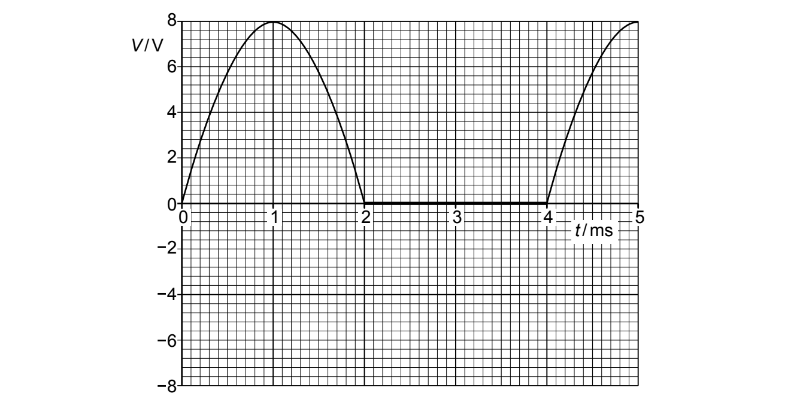
(i) Determine the root-mean-square (r.m.s.) value of the supply potential difference before rectification. [2]
(ii) State the type of rectification shown in Fig. 5.1. [1]
[3 marks]
(b) The alternating potential difference is rectified and smoothed using the circuit in Fig. 5.2.
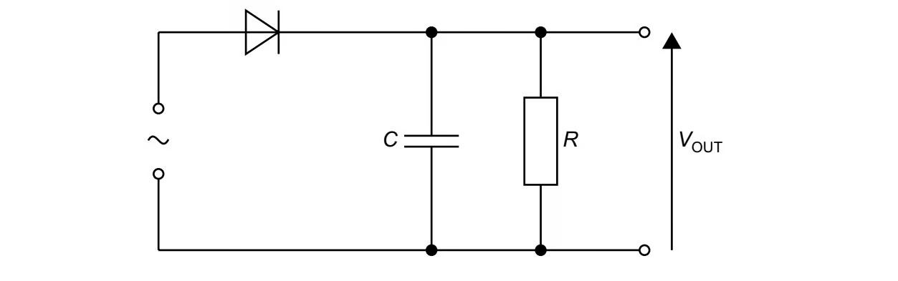
The capacitor has capacitance \(C\) of \(85\ \mathrm{\mu F}\) and the resistor has resistance \(R\).
The effect of the capacitor and the resistor is to produce a smoothed output potential difference \(V_{\mathrm{OUT}}\). The difference between maximum and minimum values of \(V_{\mathrm{OUT}}\) is \(2.0\ \mathrm{V}\).
(i) On Fig. 5.1, draw a line to show \(V_{\mathrm{OUT}}\) between times \(t=1.0\ \mathrm{ms}\) and \(t=5.0\ \mathrm{ms}\). [3]
(ii) Determine the time, in s, for which the capacitor is discharging between times \(t=1.0\ \mathrm{ms}\) and \(t=5.0\ \mathrm{ms}\). [1]
(iii) Use your answers in (b)(i) and (b)(ii) to calculate the resistance \(R\). [2]
[6 marks]
Show mark scheme / model answer
(a)
- (i) The peak potential difference is \(V_0=8.0\ \mathrm{V}\). Using \(V_{\mathrm{rms}}=V_0/\sqrt2\),
[1] - \(V_{\mathrm{rms}}=8.0/\sqrt2=5.7\ \mathrm{V}\).
[1] - (ii) Half-wave rectification.
[1]
(b)
- (i) Minimum output is \(8.0-2.0=6.0\ \mathrm{V}\).
[1] - Draw a decreasing line from \(8.0\ \mathrm{V}\) at \(1.0\ \mathrm{ms}\) to \(6.0\ \mathrm{V}\) where it meets the next rising input curve after \(4.0\ \mathrm{ms}\).
[1] - Follow the printed curve from that meeting point to the peak at \(5.0\ \mathrm{ms}\).
[1] - (ii) The capacitor discharges from \(1.0\ \mathrm{ms}\) to about \(4.5\ \mathrm{ms}\), so \(t=3.5\ \mathrm{ms}=3.5\times10^{-3}\ \mathrm{s}\).
[1] - (iii) Use \(V=V_0e^{-t/(RC)}\).
[1] - \(R=-t/[C\ln(V/V_0)]=-(3.5\times10^{-3})/[(85\times10^{-6})\ln(6/8)]=1.4\times10^2\ \mathrm{\Omega}\).
[1]
Example 5 · Discharge time and stored energy · 19.2 SQ Medium Q2
(a) The variation with potential difference \(V\) of the charge \(Q\) on one of the plates of a capacitor is shown in Fig. 1.1.
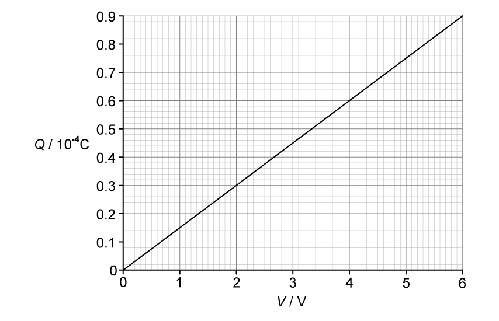
The capacitor is connected to a \(12.0\ \mathrm{V}\) power supply and two resistors P and Q are shown in Fig. 1.2.
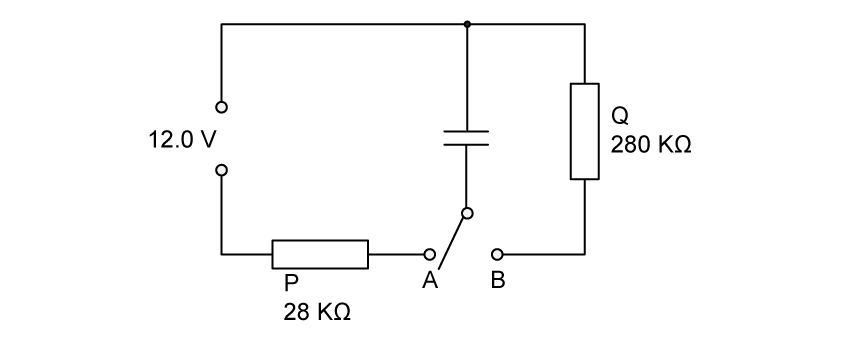
The resistance of P is \(28\ \mathrm{k\Omega}\) and the resistance of Q is \(280\ \mathrm{k\Omega}\).
The switch can be in either position A or position B.
The switch is in position A so that the capacitor is fully charged.
Calculate the energy \(E\) stored in the capacitor. [2 marks]
(b) The switch is now moved to position B.
Show that the time constant of the charge circuit is \(4.2\ \mathrm{s}\). [2 marks]
(c) The fully charged capacitor in (a) stores energy \(E\).
Determine the time \(t\) taken for the stored energy to decrease from \(E\) to \(E/4\). [4 marks]
Show mark scheme / model answer
(a) Following the supplied PDF answer:
- From Fig. 1.1, use the triangular area under the line up to \(V=6\ \mathrm{V}\) and \(Q=0.9\times10^{-4}\ \mathrm{C}\).
[1] - \(E=\tfrac12QV=\tfrac12(0.9\times10^{-4})(6)=2.7\times10^{-4}\ \mathrm{J}\).
[1]
Source-consistency warning: the question states a \(12.0\ \mathrm{V}\) supply while the graph and supplied answer use \(6\ \mathrm{V}\). The graph gradient gives \(C=15\ \mathrm{\mu F}\); extrapolating to \(12.0\ \mathrm{V}\) would give \(E=\tfrac12C(12.0)^2=1.08\times10^{-3}\ \mathrm{J}\).
(b)
- From the graph, \(C=Q/V=(0.9\times10^{-4})/6=15\ \mathrm{\mu F}\).
[1] - \(\tau=RC=(280\times10^3)(15\times10^{-6})=4.2\ \mathrm{s}\).
[1]
(c)
- Since \(E=\tfrac12CV^2\) and \(C\) is constant, \(E\propto V^2\).
[1] - Reducing energy to \(E/4\) requires \(V=V_0/2\).
[1] - Use \(V=V_0e^{-t/(RC)}\), so \(1/2=e^{-t/4.2}\).
[1] - \(t=4.2\ln2=2.9\ \mathrm{s}\).
[1]
Example 6 · Capacitor discharge and electromagnetic induction · 19.2 SQ Medium Q3
(a) A capacitor of capacitance \(520\ \mathrm{\mu F}\) is connected to a battery of electromotive force (e.m.f.) \(36\ \mathrm{V}\) in the circuit of Fig. 1.1.
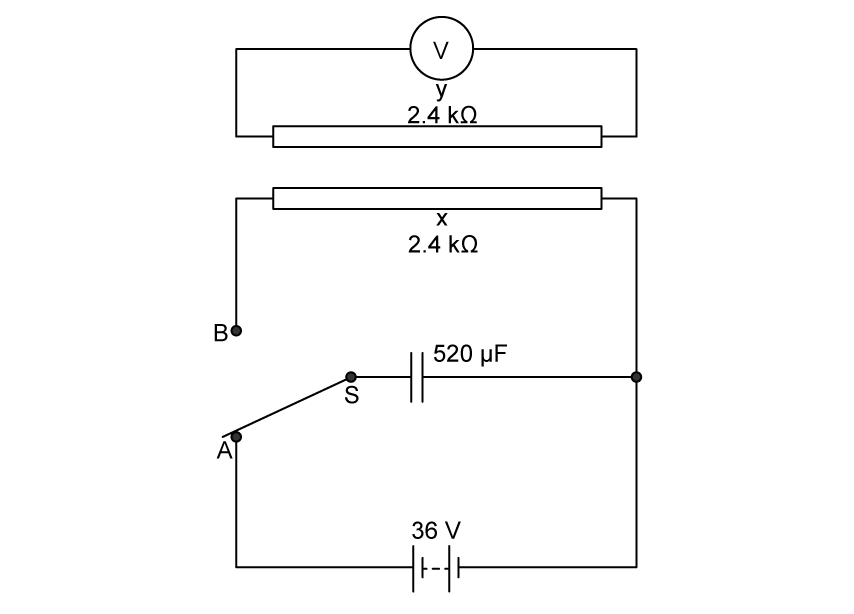
The two-way switch is initially at position X.
X and Y are identical long straight wires, each with a resistance of \(2.4\ \mathrm{k\Omega}\). These wires are placed near to and parallel to each other. Wire Y is connected to a voltmeter.
At time \(t=0\), switch S is moved to position B so that the capacitor discharges through wire X.
(i) Calculate the charge \(Q_0\) on the capacitor at time \(t=0\). [2]
(ii) Calculate the current \(I_0\) in wire P at time \(t=0\). [1]
[3 marks]
Source-label note: Fig. 1.1 labels switch positions A and B and wires X and Y. The original text nevertheless prints “position X” and “wire P”; these labels are retained above exactly as printed.
(b) Calculate the time constant \(\tau\) of the discharge circuit. [2 marks]
(c)
(i) On Fig. 1.2, sketch a line to show the variation with \(t\) of the current \(I\) in wire X as the capacitor discharges. [2]
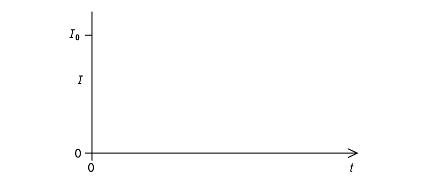
(ii) On Fig. 1.3, sketch a line to suggest the variation with \(t\) of the voltmeter reading \(V\). [1]
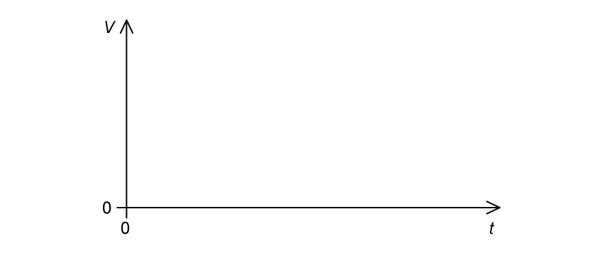
[3 marks]
(d) Explain why there is an induced e.m.f. across wire Y during the discharge of the capacitor. [3 marks]
Show mark scheme / model answer
(a)
- (i) \(Q_0=CV_0\).
[1] - \(Q_0=(520\times10^{-6})(36)=0.019\ \mathrm{C}\).
[1] - (ii) Interpreting “wire P” as discharge wire X, \(I_0=V_0/R=36/2400=0.015\ \mathrm{A}\).
[1]
(b)
- \(\tau=RC\).
[1] - \(\tau=(2400)(520\times10^{-6})=1.25\ \mathrm{s}\).
[1]
(c)
- (i) Draw an exponential decay starting at \((0,I_0)\) with negative gradient and approaching the time axis asymptotically.
[2] - (ii) Draw a positive pulse/decay with negative gradient, approaching zero as the discharge current stops changing.
[1]
(d)
- Current in wire X produces a magnetic field.
[1] - As the discharge current changes, the magnetic flux linking wire Y changes.
[1] - The changing flux linkage induces an e.m.f. across wire Y.
[1]
Chapter self-check
- Can you explain why a capacitor stores energy but has zero net charge?
- Can you derive both capacitor combination rules from \(C=Q/V\)?
- Can you identify equal charge in series and equal voltage in parallel?
- Can you find capacitance and energy from a \(Q\)-\(V\) graph?
- Can you distinguish the discharge of \(V\) from the faster decay of stored energy?
- Can you identify one time constant from a graph or calculate it using \(RC\)?
- Can you rearrange an exponential equation using natural logarithms?
- Can you sketch discharge curves with correct initial values and asymptotes?